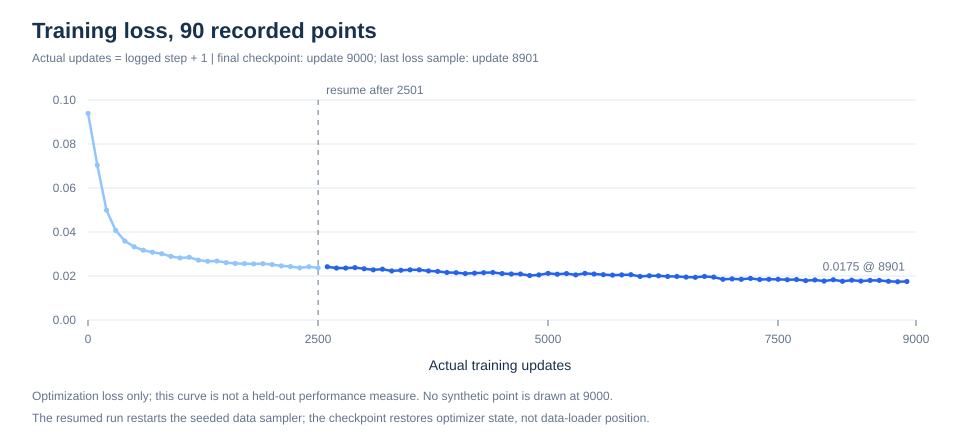

EXPERIMENT EXPLORER
40 个任务，400 次闭环。
从整体成绩，到每个语言任务、每段真实录像。
同一份检查点，完整保留本轮评测记录。
92.75%371 / 400 次任务成功
404 套件 · 每任务 10 回合
4000 运行错误 · 逐回合可追溯


TASK-LEVEL RESULTS
逐任务，查看语言与结果。
| 套件 / 任务 | 语言指令 | 成功次数 | 成功率 | 95% 区间 | 回看 |
|---|
区间为固定任务与初值下的近似 Wilson 95% 区间；每任务 10 回合，不衡量多训练种子差异。
TRAINING & EVALUATION
训练到动作，留下完整记录。
9,000 次更新的训练轨迹
下载 SVG ↓

COMPLETE EVALUATION WALL CLOCK
45m 15.86s四套件评测全过程，包含校验、模型加载、仿真、录像与进程清理。
完成间隔来自约 1 秒轮询的 JSONL 记录，包含策略请求、环境和写视频；不是纯模型前向延迟。
400 回合的完成间隔分布
OBSERVED INTERVAL / SECONDSEVERY EPISODE, REPLAYABLE
每一回合，都可以回看。
全部 400 段原始仿真视频，按任务和结果检索。
视频为真实仿真录像。回放帧率 10 fps，播放时长不代表模型推理耗时。
训练与评测协议
π₀.₅ 社区 LoRA 配方，完整 LIBERO 训练数据，batch 64，训练 seed 42，实际 9,000 次更新。视觉语言骨干 LoRA rank 16，动作专家 rank 32，并训练配方指定的视觉组件。检查点目录 8999 是训练循环索引，优化器及学习率计数均已回读确认 9,000。
LIBERO-Spatial / Object / Goal / LIBERO-10 各 10 任务，每任务前 10 个初始状态，环境 seed 7；224×224 图像、10 步 flow 积分、10×7 动作块、每执行 5 步重新规划，回合开始等待 10 步，每套件重启官方策略并使用策略 seed 0。
总体近似 Wilson 95% 区间 89.78%–94.90%。此为单训练种子的 400 回合阶段结果，未进行真机和 OOD 测试；训练在 2,501 次更新后恢复，采样器重新从 seed 42 开始。